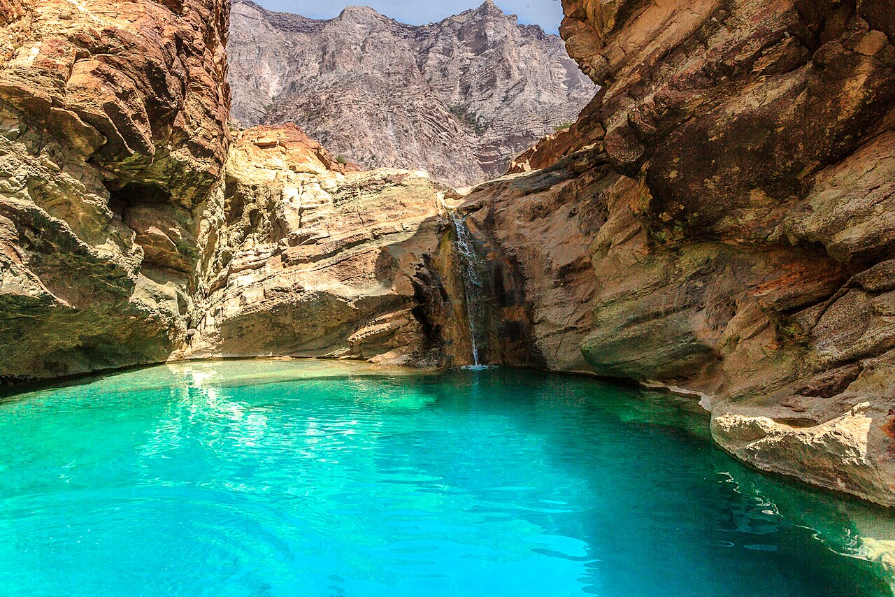
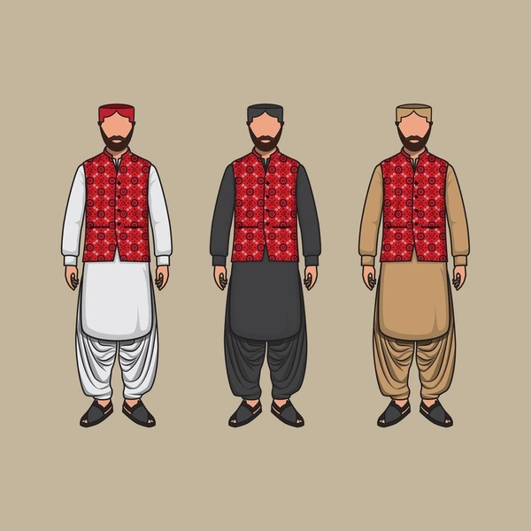
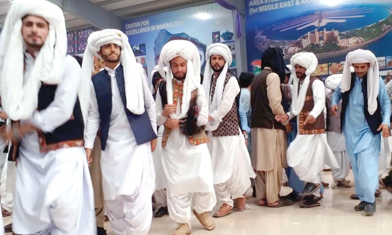
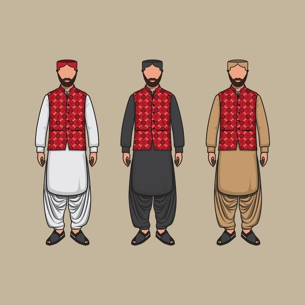
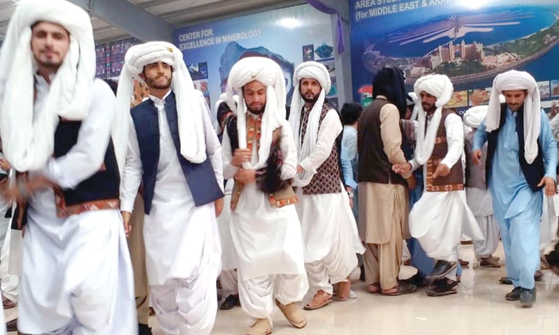

Balochistan, Pakistan's largest but most sparsely populated province, is a land of rugged beauty, characterized by its arid deserts, towering mountain ranges like the Sulaiman and Makran, and a stunning coastline along the Arabian Sea. Rich in natural resources, including natural gas and minerals, the region is also home to diverse ethnic groups, primarily the Baloch and Pashtun people, who maintain distinct cultural traditions, languages, and tribal heritage. Despite its harsh terrain, Balochistan boasts unique attractions such as the ancient ruins of Mehrgarh, the otherworldly landscapes of the Hingol National Park, and the bustling port of Gwadar, a key hub in the China-Pakistan Economic Corridor (CPEC). The province's resilient communities, nomadic lifestyles, and untapped potential make it a region of both challenge and opportunity in Pakistan's development narrative.

 


